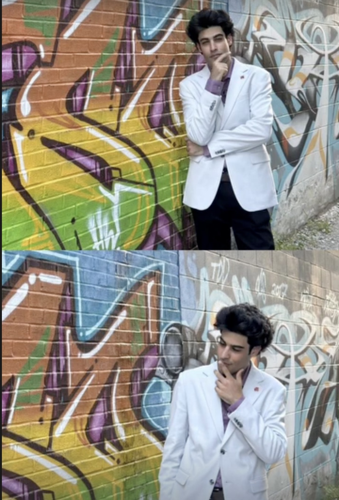

Personal Brand ContentMustafa Zebuun Mayoral Campaign
Campaign video work with Mikhail publicly credited as “Filmed and Edited by” in relevant publications. The political topic and message remain controlled by the candidate and campaign.
View case study